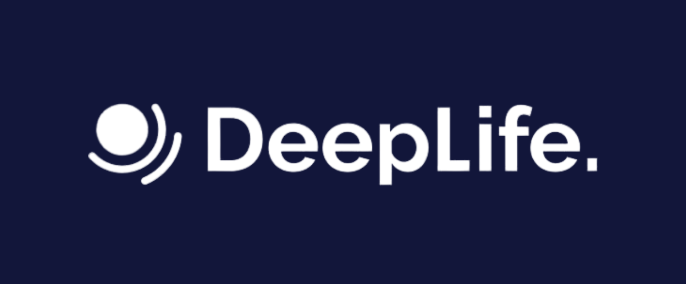
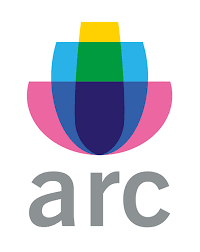
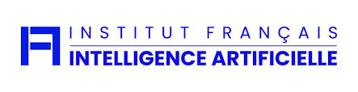

+10 ans d'expérience en ingénierie mécanique et IA • 50+ projets déployés pour PME industrielles Rhône-Alpes
Spécialiste LLM locaux et automatisation processus industriels • Financement jusqu'à 80%
Plus de 50 projets IA déployés avec succès dans l'industrie française et l'écosystème innovation

DeepLife
ARC
IFIARéduction des défauts de 30-50%, optimisation des chaînes de production, automatisation intelligente des tâches répétitives. ROI moyen : 200-400% sur 12 mois.
Outils simples et efficaces que vos équipes peuvent utiliser sans expertise technique poussée. Formation incluse pour autonomie complète.
Jusqu'à 80% de prise en charge via aides publiques : Bpifrance IA Booster, CIR, CII, Région Auvergne-Rhône-Alpes. Accompagnement dossiers inclus.
Démystification de l'IA, formation aux LLMs (ChatGPT, Mistral, Claude), sensibilisation éthique (RGPD, IA Act européen), prompt engineering appliqué à votre secteur industriel.
Analyse approfondie de vos processus industriels, identification des gains potentiels par service, cartographie des applications IA prioritaires (qualité, maintenance, RH, supply chain).
Implémentation no-code (Orange Data Mining, n8n, Make), formation équipes internes, transfert de compétences pour une autonomie complète de vos équipes techniques.
Les coûts varient de 800€ (formation) à 60 000€ (déploiement complet). Avec les aides publiques, le coût net peut être réduit de 50 à 80%. Un audit 30min permet d'estimer votre projet.
Les premiers gains sont visibles dès 2-4 semaines avec un POC. Le déploiement complet prend 3-6 mois selon la complexité. La formation équipes est intégrée pour garantir l'autonomie.
Plusieurs aides disponibles : Bpifrance IA Booster (42% subvention), CIR (30% crédit d'impôt), Région AURA (50% aide). Je vous accompagne dans les dossiers de financement.
Audit IA 30min + analyse personnalisée de vos droits aux prestations